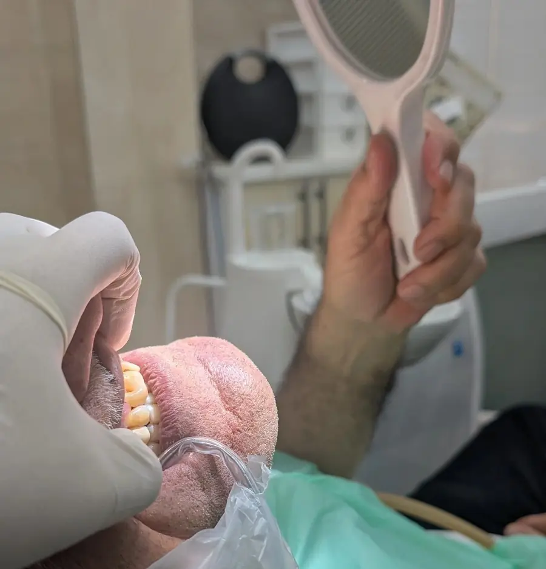

نسخه استخراجشده؛ ترجمه یا تأیید علمی انجام نشده است. وضعیت: captured
در تنظیم نهایی اکلوژن یک روکش، از بیمار میخواهی «فکت را به چپ یا راست ببر». بیمار گیج میشود؛ تکرار جمله یا عبارتهایی مثل «به سمت من» و «از من دور کن» هم کمکی نمیکند. چطور میشود حرکت لترالی درست را از او گرفت؟

یکی از مراحل ضروری در تنظیم نهایی اکلوژن رستوریشنها و روکشها، بررسی حرکات لترالی فک است تا مطمئن شویم در مسیرهای حرکتی، تداخل اکلوزالی (Occlusal Interference) وجود ندارد.
هنگام چک کردن اکلوژن در حرکات اکسکورسیو (Excursive)، بسیاری از بیماران با دستور کلامی گیج میشوند و نتیجه یکی از این سه حالت است:
همین موضوع تنظیم رستوریشن را طولانی و خستهکننده میکند.
در بیمارانی که هماهنگی عصبیعضلانی ضعیفی دارند یا در اجرای دستورهای جهتدار (چپ و راست) دچار مشکل میشوند، آینه میتواند بهعنوان یک ابزار بیوفیدبک دیداری، کنترل حرکتی بیمار را در همان جلسه بهتر کند. راه حل ساده است: فعال کردن مسیر بازخورد بینایی بیمار.
در بیمارانی که جهتیابی فکی و اجرای حرکات لترالی درخواستی برایشان دشوار است، آینه بهعنوان یک لایهی بازخورد بصری ابهام دستور کلامی را برطرف میکند، هماهنگی عصبیعضلانی را تسهیل میکند و زمان و دقت تنظیم اکلوژن را بهتر میکند.